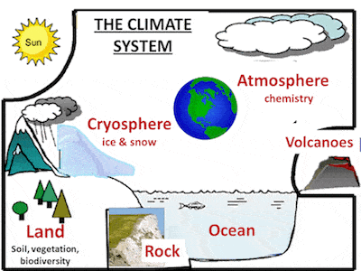
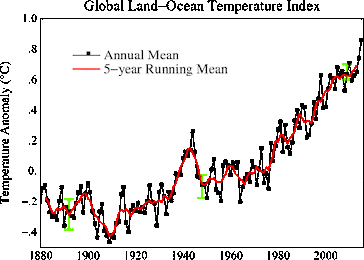

What is climate change?
Climate change refers to significant, long-term changes in the global
climate. The global climate is the connected system of sun, earth and
oceans, wind, rain and snow, forests, deserts and savannas, and
everything people do, too. The climate of a place, say New York, can be
described as its rainfall, changing temperatures during the year and so
on. But the global climate is more than the “average” of the climates of
specific places

What is global warming?
Global warming is the slow increase in the average temperature of the
earth’s atmosphere because an increased amount of the energy (heat)
striking the earth from the sun is being trapped in the atmosphere and not
radiated out into space. The earth’s atmosphere has always acted like a
greenhouse to capture the sun’s heat, ensuring that the earth has enjoyed
temperatures that permitted the emergence of life forms as we know them,
including humans. Without our atmospheric greenhouse the earth would be
very cold. Global warming, however, is the equivalent of a greenhouse with
high efficiency reflective glass installed the wrong way around.
Ionically, the best evidence of this may come from a terrible cooling
event that took place some 1,500 years ago. Two massive volcanic
eruptions, one year after another placed so much black dust into the upper
atmosphere that little sunlight could penetrate. Temperatures plummeted.
Crops failed. People died of starvation and the Black Death started its
march. As the dust slowly fell to earth, the sun was again able to warn
the world and life returned to normal. Today, we have the opposite
problem. Today, the problem is not that too little sun warmth is reaching
the earth, but that too much is being trapped in our atmosphere. So much
heat is being kept inside greenhouse earth that the temperature of the
earth is going up faster than at any previous time in history. NASA
provides an excellent course module on the science of global warming.

What causes global warming
There are three positions on global warming: (1) that global warming is
not occurring and so neither is climate change; (2) that global warming
and climate change are occurring, but these are natural, cyclic events
unrelated to human activity; and (3) that global warming is occurring as a
result primarily of human activity and so climate change is also the
result of human activity. The claim that nothing is happening is very hard
to defend in the face or masses of visual, land-based and satellite data
that clearly shows rising average sea and land temperatures and shrinking
ice masses. The claim that the observed global warming is natural or at
least not the result of human carbon emissions (see Climate Skeptics
below) focuses on data that shows that world temperatures and atmospheric
CO2 levels have been equally high or higher in the past. They also point
to the well understood effects of solar activity on the amount of
radiation striking the earth and the fact that in recent times the sun has
been particularly active. In general, climate scientists and
environmentalists either (1) dispute the data based on, for example, new
ice core data or (2) suggest that the timing issue – that is, the rapidity
with which the globe has warmed and the climate changed simply do not fit
the model of previous natural events. They note also that compared to
other stars the sun is actually very stable, varying in energy output by
just 0.1% and over a relatively short cycle of 11 to 50 years quite
unrelated to global warming as a whole. The data strongly suggests that
solar activity affects the global climate in many important ways, but is
not a factor in the systemic change over time that we call global warming.
As for the final position that global warming and climate change result
from human activity (are “anthropogenic”), scientists attribute current
atmospheric warming to human activities that have increased the amount of
carbon containing gases in the upper atmosphere and to increased amounts
of tiny particles in the lower atmosphere. (NASA offers a good course
module on “The Carbon Question.”) Specifically, gases released primarily
by the burning of fossil fuels and the tiny particles produced by
incomplete burning trap the sun’s energy in the atmosphere. Scientists
call these gases “greenhouse gases” (GHGs) because they act like the wrong
way reflective glass in our global greenhouse. Scientists call the tiny
particles ‘black carbon’ (you call it soot or smoke) and attribute their
warming effect to the fact that the resulting layer of black particles in
the lower atmosphere absorbs heat like a black blanket. Scientists date
the beginning of the current warming trend to the end of the 18th or
beginning of the 19th century when coal first came into common use. This
warming trend has accelerated as we have increased our use of fossil fuels
to include gasoline, diesel, kerosene and natural gas, as well as the
petrochemicals (plastics, pharmaceuticals, fertilizers) we now make from
oil. Scientists attribute the current warming trend to the use of fossil
fuels because using them releases into the atmosphere stores of carbon
that were sequestered (buried) millions of years ago. The addition of this
“old” carbon to the world’s current stock of carbon, scientists have
concluded, is what is heating our earth which causes global warming.